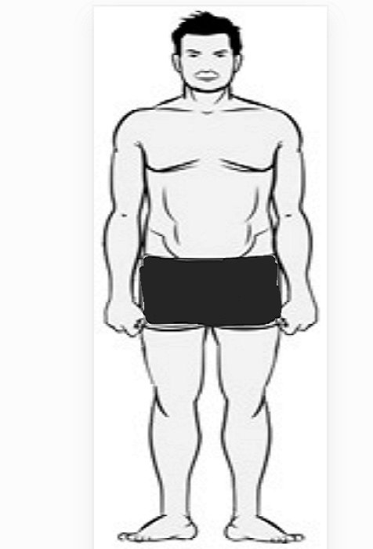

Endomorf: Katý ve yumuþak bir vücuda sahip olan endomorflar çok hýzlý bir þekilde yaðlanabilirler.Uzuvlarý
küçük görünmekle beraber genellikle güçlü kaslara sahiptirler(Özellikle üst bacak).Yüksek aðýrlýklar ile squat yapabilirler.
Hýzlý bir þekilde kas ve yað kütlesi elde ederler.
"Týknaz"olarak tanýmlanýrlar.
Yavaþ metabolizmalý,zor zayýflayan.
Kas yapýsý yað sebebi ile belirsiz.
Hýzlý bir þekilde kilo alan endomorf bu kütleyi genelde sadece kas olarak almaz.Yað alýmýný önlemek için her zaman diyetine
dikkat etmeli ve kardiyo yapmalýdýr.Diyet ile yüksek protein alabiliyorsa supplement gerekmez.
|